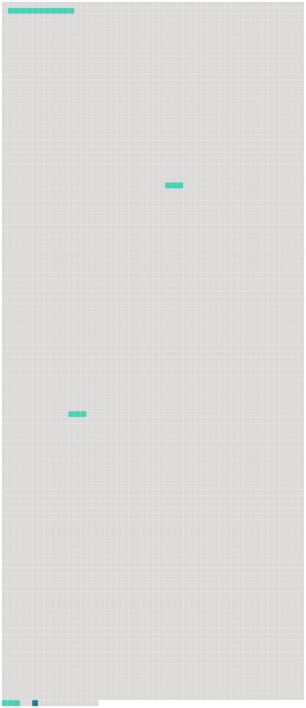

Longueur nb maillons : 5 mentions |
|
Un vieux chat noir, maigre, pelé comme un manchon hors d'usage et dont le poil tombé laissait voir par places la peau bleuâtre, était assis sur son derrière aussi près du feu que cela était possible sans se griller les moustaches, et fixait sur la marmite [ses prunelles vertes traversées d'une pupille en forme d'I] avec un air de surveillance intéressée. [31 phrases] Il le regardait au contraire fort amicalement, en roulant [ses prunelles vertes] et en faisant le gros dos. [47 phrases] Béelzébuth seul, avec l'inquiétude naturelle aux animaux de son espèce, agitait à chaque bruit les racines de ses oreilles coupées et regardait fixement dans les angles obscurs, comme s'il y eût aperçu, de [ses prunelles nyctalopes] , quelque chose d'invisible à l'œil humain. [65 phrases] Son nez couleur de truffe aspirait profondément les émanations parfumées ; [ses prunelles vertes] jubilaient et [scintillaient] , une petite bave de convoitise argentait son menton. |
 |
Il est possible de télécharger la ressource sur la page Ortolang |
Si vous avez des questions ou vous voyez des erreurs, merci d'envoyer un mail à silvia.federzoni89@gmail.com |